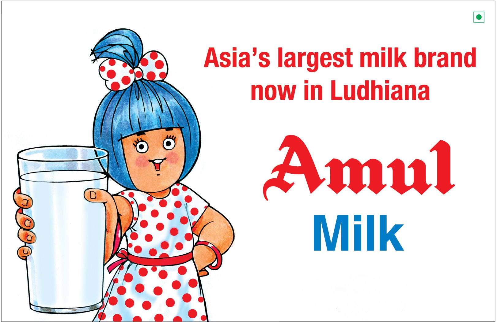

Amul
Amul is an Indian dairy cooperative society, based at Anand in the Indian state of Gujarat.Formed in 1946, it is a cooperative brand managed by a cooperative body, the Gujarat Co-operative Milk Marketing Federation Ltd. (GCMMF), which today is jointly owned by 36 lakh (3.6 million) milk producers in Gujarat, and the apex body of 13 District Milk Unions, spread across 13,000 villages of Gujarat.Amul spurred India's White Revolution, which made the country the world's largest producer of milk and milk products.Kaira District Milk Union Limited (later renamed to Amul - Anand Milk Union Limited) was founded in 1946 through the efforts of Tribhuvandas Patel. Amul's foundation was a significant contributor to the white revolution in India.Tribhuvandas Patel under the guidance of Sardar Vallabhbhai Patel became the founding chairman of the organization and led it until his retirement in the 70s. He hired Dr. Verghese Kurien in 1949. He convinced Dr. Kurien to stay and help with the mission